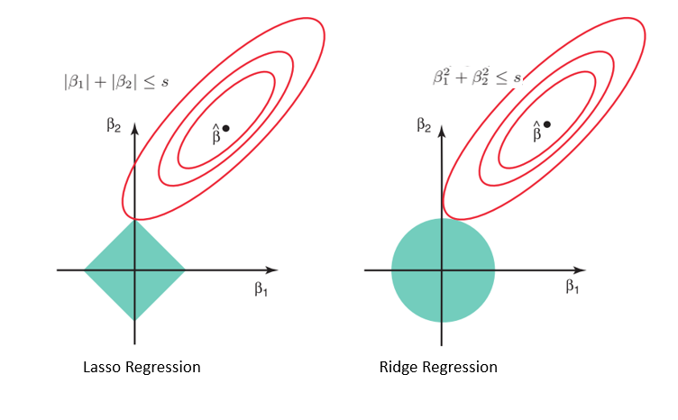

Regularizing regression: LASSO and Ridge
Contents
3.1. Regularizing regression: LASSO and Ridge¶
3.1.1. Overview¶
In this section, we will begin discussing generalizations of the usual least-squares linear regression problem. In particular, we will introduce here the concept of regularization, specifically as it applies to two methods used frequently with linear regression: LASSO and Ridge Regression. Before explaining these methods, let’s give a bit of motivation for why they might be useful. Recall the usual least-squares problem and solution:
As we’ve discussed in a previous section, a point of complication that can arise when using this solution is in computing the inverse of the matrix \(\boldsymbol{X^\top X}\). In particular, there are two types of issues that may arise when doing this:
If \(n<p\) (i.e. the number of examples is less than the number of features), then the matrix \(\boldsymbol{X^\top X}\) is not invertible, and so \(\hat{\boldsymbol{\beta}}_{OLS}\) doesn’t even exist.
Even if \(\boldsymbol{X^\top X}\) does exist, the inverse may be particularly poorly behaved. This will happen, for example, if one of the columns of \(\boldsymbol{X}\) is very close to being a linear combination of some of the other columns.
In case 1, we will always need to find a different way to fit a linear regression model (for example, using the Moore-Penrose solution instead). Let’s examine what might happen in case 2 a bit more closely. If the matrix \(\boldsymbol{X^\top X}\) is poorly behaved, in the way described above, then what will generally occur is that its inverse \((\boldsymbol{X^\top X})^{-1}\) will typically contain many very large values. This has a few consequences. First, it will tend to make the coefficients in \(\hat{\boldsymbol{\beta}}\) also very large. Moreover, recall that under the Gaussian model for linear regression, the variance of a coefficient \(\hat{\beta}_j\) is given by \(\sigma^2 (\boldsymbol{X^\top X})^{-1}_{jj}\). Thus, this same issue will cause the variance around the coefficients to become very large.
Let’s illustrate this with an example. In the following cell, we construct a data matrix \(\boldsymbol{X}\) that is intentionally poorly conditioned. We construct this dataset as follows:
We generate a random matrix \(\boldsymbol{X}_0 \in \mathbb{R}^{n\times (p-1)}\).
We create a new column \(\boldsymbol{x}_p = \sum_{j=1}^{p-1} \boldsymbol{x}_j + \boldsymbol{\xi}\), where \(\boldsymbol{\xi}\) is some very small noise, and set \(\boldsymbol{X} = [\boldsymbol{X}_0, \boldsymbol{x}_p]\). This matrix is almost not full rank, which will suffice to make the inverse of \(\boldsymbol{X^\top X}\) be very “bad”.
Finally, we generate the responses \(\boldsymbol{y}\) as usual using a linear model \(\boldsymbol{y} = \boldsymbol{X\beta}_\star + \boldsymbol{\varepsilon}\).
import numpy as np
np.random.seed(42)
n, p = 50, 5
X0 = np.random.normal(size=(n,p-1))
xp = np.sum(X0, axis=1).reshape(n,1) + 1e-8*np.random.normal(size=(n,1))
X = np.hstack((X0, xp))
beta_star = np.random.normal(size=p)
y = np.dot(X, beta_star) + 2*np.random.normal(size=n)
Now let’s actually fit the regression model and inspect the results. We’ll do this using the statsmodels package.
import statsmodels.api as sm
results = sm.OLS(y, X).fit()
results.summary()
| Dep. Variable: | y | R-squared (uncentered): | 0.661 |
|---|---|---|---|
| Model: | OLS | Adj. R-squared (uncentered): | 0.624 |
| Method: | Least Squares | F-statistic: | 17.58 |
| Date: | Thu, 20 Oct 2022 | Prob (F-statistic): | 1.26e-09 |
| Time: | 19:06:46 | Log-Likelihood: | -102.57 |
| No. Observations: | 50 | AIC: | 215.1 |
| Df Residuals: | 45 | BIC: | 224.7 |
| Df Model: | 5 | ||
| Covariance Type: | nonrobust |
| coef | std err | t | P>|t| | [0.025 | 0.975] | |
|---|---|---|---|---|---|---|
| x1 | 7.63e+06 | 2.76e+07 | 0.277 | 0.783 | -4.79e+07 | 6.32e+07 |
| x2 | 7.63e+06 | 2.76e+07 | 0.277 | 0.783 | -4.79e+07 | 6.32e+07 |
| x3 | 7.63e+06 | 2.76e+07 | 0.277 | 0.783 | -4.79e+07 | 6.32e+07 |
| x4 | 7.63e+06 | 2.76e+07 | 0.277 | 0.783 | -4.79e+07 | 6.32e+07 |
| x5 | -7.63e+06 | 2.76e+07 | -0.277 | 0.783 | -6.32e+07 | 4.79e+07 |
| Omnibus: | 16.605 | Durbin-Watson: | 2.263 |
|---|---|---|---|
| Prob(Omnibus): | 0.000 | Jarque-Bera (JB): | 30.218 |
| Skew: | -0.934 | Prob(JB): | 2.74e-07 |
| Kurtosis: | 6.319 | Cond. No. | 4.75e+08 |
Notes:
[1] R² is computed without centering (uncentered) since the model does not contain a constant.
[2] Standard Errors assume that the covariance matrix of the errors is correctly specified.
[3] The smallest eigenvalue is 1.03e-15. This might indicate that there are
strong multicollinearity problems or that the design matrix is singular.
There are a few interesting things to note in these outputs. First, the regression coefficients are extremely large – very far away from the true \(\hat{\boldsymbol{\beta}}_\star\) that we drew from a normal distribution. Moreover, the standard deviations of the coefficients are also massive, again due to large values on the diagonal of \((\boldsymbol{X^\top X})^{-1}\). In general, the message is that we can’t trust the results in situations like this one. While this particular example is made up, such situations also arise in practice. For example, datasets in genetics frequently contain very high-dimensional datasets that lead to poorly-conditioned data matrices.
So what can we do in these situations? One option is to regularization to reduce the variance in our estimates of the coefficients. There are many forms of regularization, but we will focus on so-called shrinkage methods. Such methods change the least-squares objective by adding a term which penalizes large coefficients. There are two common ways of doing this. In Ridge Regression, we add a penalty term using the squared \(2\)-norm:
In LASSO, we penalize the size of the coefficients measured according to the \(1\)-norm:
(Recall that the \(1\)-norm of a vector \(\boldsymbol{v}\) is the sum of its absolute values: \(\|\boldsymbol{v}\|_1 = \sum_{j=1}^p |v_j|\).)
In general, adding penalty terms of this form will force the solution to be “smaller” in size. The constant \(\lambda\) (called the “regularization parameter”) controls how much this size is penalized: larger \(\lambda\) will result in smaller weights. In the next sections, we discuss Ridge and LASSO in more detail, and will see how changing the regularization parameter \(\lambda\) effects the solutions obtained from these methods.
3.1.2. Ridge regression¶
For a given regularization parameter \(\lambda\), the Ridge solution \(\hat{\boldsymbol{\beta}}_{RR}(\lambda)\) is defined as the solution to the following problem:
Using a bit of calculus (similar to what we did for OLS), we can obtain a closed formula for \(\hat{\boldsymbol{\beta}}_{RR}(\lambda)\):
Importantly, the Ridge regression solution always exists, and is unique, regardless of whether \(\boldsymbol{X^\top X}\) is invertible or not. This is because for any \(\lambda > 0\), the matrix \(\boldsymbol{X^\top X} + \lambda I\) is always full rank.
As we have claimed, the Ridge solution will make the coefficients of smaller as \(\lambda\) increases. Let’s check that this is indeed the case on our synthetic example defined above, and see that reasonable choices of \(\lambda\) result in much better behaved solutions. First, we’ll define a simple python function which computes the Ridge regression solution.
def fit_RR(X, y, lamb):
return np.dot(np.linalg.inv(X.T@X + lamb*np.eye(X.shape[1])), np.dot(X.T, y))
Just to get a sense of the coefficients that we get, let’s try fitting the model to our dataset with \(\lambda = 1/2\).
fit_RR(X, y, lamb=0.5)
array([-2.51699159, -0.12978817, 1.2217035 , 0.64366151, -0.78141484])
Let’s compare these to the “true” coefficients \(\boldsymbol{\beta}_\star\) that we used to generate the labels:
beta_star
array([-1.26088395, 0.91786195, 2.1221562 , 1.03246526, -1.51936997])
We can see that this solution, choosing \(\lambda\) arbitrarily, already improves performance substantially. To visualize exactly what happens to each of the coefficients as we increase the size of \(\lambda\), we can plot the entire trajectory of \(\hat{\boldsymbol{\beta}}_{RR}(\lambda)\) as a function of \(\lambda\). We do this in the cell below across a grid of \(\lambda\) values, along with the values of \(\hat{\boldsymbol{\beta}}_\star\) for comparison. We also plot the values of \(\|\boldsymbol{\beta}_\star - \hat{\boldsymbol{\beta}}_{RR}(\lambda)\|_2^2\) as a function of \(\lambda\) so we can see how close the solution gets to the true solution \(\boldsymbol{\beta}_\star\).
lamb_range = np.exp(np.arange(-2, 10, 0.5))
RR_solutions = []
for lamb in lamb_range:
beta_hat_RR_curr = fit_RR(X, y, lamb)
RR_solutions.append(beta_hat_RR_curr)
RR_solutions = np.array(RR_solutions)
errors = [np.linalg.norm(sol-beta_star)**2 for sol in RR_solutions]
import matplotlib.pyplot as plt
colors = ["red", "blue", "green", "orange", "purple"]
fig, axs = plt.subplots(1, 2, figsize=(10,3))
axs = axs.flatten()
for j in range(RR_solutions.shape[1]):
axs[0].plot(lamb_range, RR_solutions[:, j], color=colors[j], marker='o', label=f'j={j}')
axs[0].hlines(beta_star[j], 0, np.max(lamb_range), color=colors[j], linestyle='--')
axs[0].hlines(0, 0, np.max(lamb_range), color="black", linestyle='--')
axs[0].set_xlabel("Lambda", fontsize=12)
axs[0].set_ylabel("Coefficient", fontsize=12)
axs[0].legend()
axs[0].set_xscale('log')
axs[1].plot(lamb_range, errors, marker='o')
axs[1].set_xlabel("Lambda", fontsize=12)
axs[1].set_ylabel(r"$\|\beta_* - \hat{\beta}(\lambda)\|^2$", fontsize=12)
axs[1].set_xscale('log')
plt.tight_layout()
plt.show()
From these plots, we can make a few important observations. First, the solutions are all much better in than the OLS solution, as seen in the plot on the right. For small \(\lambda\), the error \(\|\boldsymbol{\beta}_\star - \hat{\boldsymbol{\beta}}_{RR}(\lambda)\|_2^2\) is actually reasonably small – and in fact reaches a minimum at the best possible regularization parameter \(\lambda_*\). As \(\lambda\) increases, however, we start to overcorrect, and the coefficients become closer and closer to zero, and the error correspondingly starts to increase. In general, this is a tradeoff that will always exist, and requires careful choice of the regularization parameter \(\lambda\). Next, we discuss how this tradeoff comes about.
To understand the performance of the Ridge regression solution, and how it performs as a function of \(\lambda\), we consider the bias-variance decomposition:
Intuitively, higher \(\lambda\) should make the variance of \(\hat{\boldsymbol{\beta}}_{RR}(\lambda)\) smaller, while making the bias bigger (since it is biasing the estimator toward zero). Fortunately, both the bias and the variance have closed form solutions for Ridge regression.
Similar to OLS regression, where \(\text{Var}(\hat{\boldsymbol{\beta}}_{OLS}) = \sigma^2 (\boldsymbol{X^\top X})^{-1}\), the variance of the Ridge regression solution is given by (assuming the errors are normally distribution):
The bias is given by
Let’s plot these for our example (note that for the variance, we plot only the diagonal elements, corresponding to the variance of each coefficient).
bias_RR = []
var_RR = []
for lamb in lamb_range:
XTX = X.T@X
XTX_lambI_inv = np.linalg.inv(XTX + lamb*np.eye(X.shape[1]))
var_curr = 0.25*XTX_lambI_inv@XTX@XTX_lambI_inv
bias_curr = np.dot((XTX_lambI_inv@XTX - np.eye(X.shape[1])), beta_star)
var_RR.append(np.diag(var_curr))
bias_RR.append(bias_curr)
bias_RR = np.array(bias_RR)
var_RR = np.array(var_RR)
fig, axs = plt.subplots(1, 2, figsize=(10,3))
axs = axs.flatten()
for j in range(RR_solutions.shape[1]):
axs[0].plot(lamb_range, bias_RR[:, j]**2, color=colors[j], marker='o', label=f'j={j}')
axs[1].plot(lamb_range, var_RR[:, j], color=colors[j], marker='o', label=f'j={j}')
axs[0].set_xlabel("Lambda", fontsize=12)
axs[0].set_ylabel("Squared Bias", fontsize=12)
axs[0].legend()
axs[0].set_xscale('log')
axs[1].set_xlabel("Lambda", fontsize=12)
axs[1].set_ylabel("Variance", fontsize=12)
axs[1].set_xscale('log')
plt.tight_layout()
plt.show()
These plots indeed confirm our suspicion: for large \(\lambda\), the squared bias eventually becomes large (as the coefficients are forced to zero), while the variance becomes smaller. However, this still leaves the question of how to select \(\lambda\) in a practical setting, when we don’t know \(\boldsymbol{\beta}_\star\). In practice, the selection of \(\lambda\) is typically done using a hold-out set of data, or a technique called cross-validation. This will be explored in an upcoming homework assignment.
3.1.3. The LASSO¶
LASSO regression looks very similar to Ridge regression at first glance; the solution \(\hat{\boldsymbol{\beta}}_{LASSO}(\lambda)\) is given by
The primary difference from Ridge is that we have replaced the penalty term with the 1-norm \(\|\boldsymbol{\beta}\|_1\); this is done for a very specific reason related to the geometry of the \(1\)-norm. In particular, the LASSO is explicitly designed to induce sparsity in the solution \(\hat{\boldsymbol{\beta}}_{LASSO}(\lambda)\), meaning that only a few of the coefficients are non-zero, while the rest are set exactly equal to zero. Below we give a heuristic explanation of how LASSO works – there is a formal mathematical theory for the LASSO, but it is quite technical and beyond the scope of this course.
 |
|---|
Figure 1: Illustration of LASSO vs Ridge solutions |
The green shaded regions in the plots in Figure 1 represent the sets \(\{\boldsymbol{\beta} : \|\boldsymbol{\beta}\|_1 \leq s\}\) (left) and \(\{\boldsymbol{\beta} : \|\boldsymbol{\beta}\|_2 \leq s\}\) (right), i.e. the sets of possible solutions where the \(1\) and \(2\) norms are smaller than some given threshold \(s\). By penalizing one of these norms, we are effectively constraining ourselves to one of these sets. Note that in contrast to the \(2\)-norm set (which is a circle), the \(1\)-norm set has the shape of a diamond. The red ellipses are the level sets of the squared error \(\|\boldsymbol{X\beta} - \boldsymbol{y}\|_2^2\), and the Ridge or LASSO solutions will occur exactly where these ellipses are tangent to the green sets. Because the \(1\)-norm sets form a diamond, these tangents tend to occur at one of the points of the diamond, which will lead to solutions with some entries equal to zero.
In contrast to the Ridge regression solution, where we saw that the coefficients get smoothly smaller as we increase \(\lambda\). In LASSO, instead more coefficients become set to zero as \(\lambda\) increases.
Unlike Ridge regression, the LASSO problem does not have any closed form solution (this is because, unlike the \(2\)-norm, the \(1\)-norm is not differentiable). However, it is possible to show that it does have a solution which exists and is unique, and there have been many algorithms developed to efficiently find the solution \(\hat{\boldsymbol{\beta}}_{LASSO}(\lambda)\) numerically.
To illustrate the behavior of the LASSO solution, we will construct a different simulated dataset. We will generate an \(n\times p\) matrix \(\boldsymbol{X}\) randomly, this time with \(n < p\) (so \(\boldsymbol{X^\top X}\) is actually not invertible, not just poorly conditioned). However, the “true” coefficient vector \(\boldsymbol{\beta}_\star\) will be chosen to be sparse, with only \(\alpha\) fraction of its entries non-zero. We do this in the following cell.
alpha = 0.5
n, p = 75, 100
n_nonzero = int(alpha*p)
X = np.random.normal(size=(n,p))
# start with all zeros
beta_star = np.zeros(shape=p)
# randomly select alpha*p features to be nonzero and fill these in with normal random variables
random_ix = np.random.choice(len(beta_star), n_nonzero, replace=False)
beta_star[random_ix] = np.random.normal(size=n_nonzero)
y = np.dot(X, beta_star) + 2*np.random.normal(size=n)
Next, we will make the same plots of the coefficients and errors as a function of \(\lambda\). To make the plot visible, we will pick 5 of the coefficients randomly. To fit the LASSO models, we will use an implementation given in the python package scikit-learn.
from sklearn.linear_model import Lasso
lamb_range = np.exp(np.arange(-8, 2, 0.5))
lasso_solutions = []
for lamb in lamb_range:
beta_hat_lasso_curr = Lasso(lamb).fit(X, y).coef_
lasso_solutions.append(beta_hat_lasso_curr)
lasso_solutions = np.array(lasso_solutions)
errors = [np.linalg.norm(sol-beta_star)**2 for sol in lasso_solutions]
import matplotlib.pyplot as plt
colors = ["red", "blue", "green", "orange", "purple"]
fig, axs = plt.subplots(1, 2, figsize=(10,3))
axs = axs.flatten()
for j in range(5):
axs[0].plot(lamb_range, lasso_solutions[:, j], color=colors[j], marker='o', label=f'j={j}')
axs[0].hlines(beta_star[j], 0, np.max(lamb_range), color=colors[j], linestyle='--')
axs[0].hlines(0, 0, np.max(lamb_range), color="black", linestyle='--')
axs[0].set_xlabel("Lambda", fontsize=12)
axs[0].set_ylabel("Coefficient", fontsize=12)
axs[0].legend()
axs[0].set_xscale('log')
axs[1].plot(lamb_range, errors, marker='o')
axs[1].set_xlabel("Lambda", fontsize=12)
axs[1].set_ylabel(r"$\|\beta_* - \hat{\beta}(\lambda)\|^2$", fontsize=12)
axs[1].set_xscale('log')
plt.tight_layout()
plt.show()
/Users/rythei/opt/miniconda3/lib/python3.9/site-packages/sklearn/linear_model/_coordinate_descent.py:647: ConvergenceWarning: Objective did not converge. You might want to increase the number of iterations, check the scale of the features or consider increasing regularisation. Duality gap: 8.278e-01, tolerance: 4.515e-01
model = cd_fast.enet_coordinate_descent(
/Users/rythei/opt/miniconda3/lib/python3.9/site-packages/sklearn/linear_model/_coordinate_descent.py:647: ConvergenceWarning: Objective did not converge. You might want to increase the number of iterations, check the scale of the features or consider increasing regularisation. Duality gap: 1.117e+00, tolerance: 4.515e-01
model = cd_fast.enet_coordinate_descent(
/Users/rythei/opt/miniconda3/lib/python3.9/site-packages/sklearn/linear_model/_coordinate_descent.py:647: ConvergenceWarning: Objective did not converge. You might want to increase the number of iterations, check the scale of the features or consider increasing regularisation. Duality gap: 1.401e+00, tolerance: 4.515e-01
model = cd_fast.enet_coordinate_descent(
/Users/rythei/opt/miniconda3/lib/python3.9/site-packages/sklearn/linear_model/_coordinate_descent.py:647: ConvergenceWarning: Objective did not converge. You might want to increase the number of iterations, check the scale of the features or consider increasing regularisation. Duality gap: 1.997e+00, tolerance: 4.515e-01
model = cd_fast.enet_coordinate_descent(
/Users/rythei/opt/miniconda3/lib/python3.9/site-packages/sklearn/linear_model/_coordinate_descent.py:647: ConvergenceWarning: Objective did not converge. You might want to increase the number of iterations, check the scale of the features or consider increasing regularisation. Duality gap: 1.946e+00, tolerance: 4.515e-01
model = cd_fast.enet_coordinate_descent(
/Users/rythei/opt/miniconda3/lib/python3.9/site-packages/sklearn/linear_model/_coordinate_descent.py:647: ConvergenceWarning: Objective did not converge. You might want to increase the number of iterations, check the scale of the features or consider increasing regularisation. Duality gap: 5.369e-01, tolerance: 4.515e-01
model = cd_fast.enet_coordinate_descent(
These plots are in some since similar to the plots for Ridge regression: the coefficients become smaller as \(\lambda\) becomes larger, and the error \(\|\boldsymbol{\beta}_\star - \hat{\boldsymbol{\beta}}_{LASSO}(\lambda)\|_2^2\) has a minimum at a “best” regularization parameter \(\lambda_\star\). However, in contrast to the Ridge coefficients, which smoothly decreased to zero as a function of \(\lambda\), the LASSO coefficients become exactly equal to zero. Ideally, these coefficients which are set to zero by LASSO overlap with the coefficients in \(\boldsymbol{\beta}_\star\) which are actually zero. Let’s check this as a function of \(\lambda\) again.
overlaps = []
for ix in range(len(lamb_range)):
beta_hat_lasso_curr = lasso_solutions[ix]
overlap = np.sum((beta_hat_lasso_curr == 0)*(np.array(beta_star) == 0))/len(beta_star[beta_star==0])
overlaps.append(overlap)
plt.plot(lamb_range, overlaps, marker='o')
plt.xlabel("Lambda", fontsize=12)
plt.ylabel(r"% Sparse Indexes Predicted", fontsize=12)
plt.xscale('log')
plt.show()
As we increase \(\lambda\), we recover a larger and larger fraction of the correct sparse indices – this is expected, since all the coefficients will eventually become zero for large enough \(\lambda\).
So when should we use LASSO versus Ridge? We will often use Ridge regression in situations where we don’t have any particular reason to suspect that some of the coefficients might be zero, but instead as general regularization to deal with having many predictors and/or a poorly conditioned data matrix \(\boldsymbol{X}\). Instead, LASSO should mostly be used when we have a suspicion that the true coefficients are actually sparse. Indeed, we can think of LASSO as a form of variable selection, at each value of \(\lambda\) it picks a subset of the most meaningful features (the ones with non-zero coefficients). This happens in many real-world settings: for example, LASSO is used to analyze large gene-expression datasets, where many thousands of genes may be measured, and a researcher suspects that only a few are relevant to the response, but unsure which genes exactly.